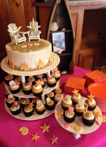

|  | Fondant refers to the type of icing used when creating the cake for your special occasion. Fondant icing is good for sculpting and building fantasticly detailed art work. Art work that is edible! A delicously decadent way to brighten up any occasion. If you choose this option for your cake keep in mind this is a small price increase due to the highly detailed and time consuming bake art that we create for you. |